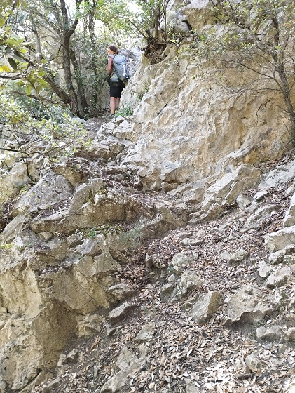

Le sentier rose de la rive droite de l'Aude longe à mi-hauteur les gorges de la Pierre-Lys.
Je ne vous indiquerai pas le point de départ ce sentier tout simplement parce que je ne le connais pas...
Vraisemblablement il devait partir du village de St Martin Lys, d'un campement des ouvriers de la voie ferrée Quillan Rivesaltes. Personnellement je suis persuadé qu'il a été tracé dans le but de permettre aux terrassiers de rejoindre leur lieu de travail.
J'ignore jusqu'où il mènait, Amédine Mas et moi ayant été contraints d'arréter l'exploration avant d'arriver.
Nous y reviendrons biensûr, mieux équipé et verrons.
Si ce chemin a bien les 130 ans que j'estime, il est normal que son état ce soit autant dégradé et parfois dangeureux. Mais il reste quand même net et entretenu... En effet, il est balisé de marques roses tout du long que nous avons pu explorer.

Le chemin tel que nous avons pu le découvrir
Vue du pont de chemin fer et du passage du curé

Le canal vers Quirbajou

Encore un bout de chemin
Le rocher à tête de bonhomme et Amédine

Le fond des gorges depuis le rocher à tête de bonhomme
Rochers étonnants (dromadaire, menhir, gateau ?)
Coulées ayant emporté le chemin
Vue générale ou détaillée des gorges

Le Quirbajou - l'obstacle de Félix Armand

Et si la roche venait à nous...

Encore du chemin et des paroies abruptes

Le retour à la civilisation